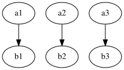
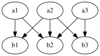
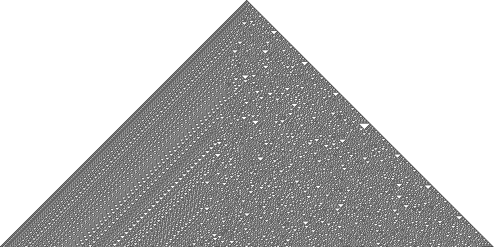

Value types: game of life
Last updated on 2025-02-10 | Edit this page
Overview
Questions
- How can I use dispatch to implement different versions of a function?
- How can I optimise against memory allocations of small arrays?
Objectives
- Understand the concept of value types.
- Understand
::Type{...}syntax. - Apply
StaticArraysto optimise certain operations.
Let’s build cellular automata! Cellular automata are discrete systems consisting of cells that behave according to some well defined rules locally, but then often show surprising behaviour globally. We’ll look at two examples: 1-dimensional so-called Elementary Cellular Automata, and the 2-dimensional Game of Life.
To implement these cellular automata we’ll implement a generic function for performing stencil operations: these are operations that take an array as input, and then compute an output array from preset neighbourhoods of the input array.
| map | stencil |
|---|---|
 |
 |
JULIA
using GraphvizDotLang: digraph, edge, node, save
g_map = digraph() |>
edge("a1", "b1") |> edge("a2", "b2") |> edge("a3", "b3")
save(g_map, "episodes/fig/map_operation.svg")
g_stencil = digraph() |>
edge("a1", "b1") |> edge("a1", "b2") |>
edge("a2", "b1") |> edge("a2", "b2") |> edge("a2", "b3") |>
edge("a3", "b2") |> edge("a3", "b3")
save(g_stencil, "episodes/fig/stencil_operation.svg")In this episode we’re using the following modules:
Value types
Our cellular automaton will live inside a box. And we want to be generic over different types of boundary conditions. There are two fundamental ways to deal with user choices like that: run time and compile time.
We can use multiple dispatch to implement different boundary types.
JULIA
#| id: stencils
abstract type BoundaryType{dim} end
struct Periodic{dim} <: BoundaryType{dim} end
struct Constant{dim, val} <: BoundaryType{dim} end
@inline get_bounded(::Type{Periodic{dim}}, arr, idx) where {dim} =
checkbounds(Bool, arr, idx) ? arr[idx] :
arr[mod1.(Tuple(idx), size(arr))...]
@inline get_bounded(::Type{Constant{dim, val}}, arr, idx) where {dim, val} =
checkbounds(Bool, arr, idx) ? arr[idx] : valHere we have to convert CartesianIndex to a tuple to do
broadcasting operations over them. Try what happens if you don’t.
JULIA
using Test
@testset "Boundary" begin
@testset "Boundary.Periodic" begin
a = reshape(1:9, 3, 3)
@test get_bounded(Periodic{2}, a, CartesianIndex(0, 0)) == 9
@test get_bounded(Periodic{2}, a, CartesianIndex(4, 5)) == 4
end
@testset "Boundary.Constant" begin
a = reshape(1:9, 3, 3)
@test get_bounded(Constant{2, 0}, a, CartesianIndex(2, 2)) == 5
@test get_bounded(Constant{2, 0}, a, CartesianIndex(5, 0)) == 0
end
endReflected boundaries
Extend the get_bounded method to also work with
Reflected boundaries.
Hint 1: a reflected box is also periodic with a period
2n where n is the width of the box.
Hint 2: beware off-by-one errors! Use a unit test to check that your function is behaving as should.
Hint 3: The following function may help.
Write to output parameter
We’re now ready to write our first stencil! function.
This function takes as an input another function, a boundary type, a
stencil size, an input and output array.
JULIA
function stencil!(f, ::Type{BT}, sz, inp::AbstractArray{T,dim}, out::AbstractArray{RT,dim}) where {T, RT, dim, BT <: BoundaryType{dim}}
center = CartesianIndex((div.(sz, 2) .+ 1)...)
nb = Array{T}(undef, sz...)
for i in eachindex(IndexCartesian(), inp)
for j in eachindex(IndexCartesian(), nb)
nb[j] = get_bounded(BT, inp, i - center + j)
end
out[i] = f(nb)
end
return out
end
stencil!(f, ::Type{BT}, sz) where {BT} =
(inp, out) -> stencil!(f, BT, sz, inp, out)Note that we pass IndexCartesian() to
eachindex to force it to give us cartesian indices instead
of linear ones. We’re ready to implement ECA.
JULIA
eca(n) = nb -> 1 & (n >> ((nb[1] << 2) | (nb[2] << 1) | nb[3]))
rule(n) = stencil!(eca(n), Reflected{1}, 3)JULIA
n = 1024
a = zeros(Bool, n)
b = zeros(Bool, n)
a[n ÷ 2] = true
rule(30)(a, b) |> to_image
a, b = b, aCreate an image
Create an image (of say 1024x512) that shows the state of the one-dimensional ECA on one axis and successive generations on the other axis.
Using iterators:
JULIA
using IterTools
function run_eca_iterators(r, n)
Iterators.take(
iterated(
let b = zeros(Bool, n); function (x)
rule(r)(x, b); x, b = b, x; copy(x) end end,
let a = zeros(Bool, n); a[n÷2] = true; a end), n÷2) |> stack
end
run_eca_iterators(18, 1024) |> to_image
@benchmark run_eca_iterators(18, 1024)Using a comprehension:
JULIA
function run_eca_comprehension(r, n)
x = zeros(Bool, n)
x[n÷2] = 1
b = Vector{Bool}(undef, n)
(begin
rule(30)(x, b)
x, b = b, x
copy(x)
end for _ in 1:512) |> stack
end
run_eca_comprehension(30, 1024) |> to_image
@benchmark run_eca_comprehension(30, 1024)
@profview for _=1:100; run_eca_comprehension(30, 1024) endUsing a builder function:
JULIA
function run_eca_builder(r::Int, n::Int)
result = Array{Bool,2}(undef, n, n ÷ 2)
result[:, 1] .= 0
result[n÷2, 1] = 1
f = rule(r)
for i in 2:(n÷2)
@views f(result[:, i-1], result[:, i])
end
return result
end
run_eca_builder(73, 1024) |> to_image
@benchmark run_eca_builder(30, 1024)
@profview for _=1:100; run_eca_builder(30, 1024); endUsing a builder function with better data locality:
JULIA
function run_eca_builder2(r::Int, n::Int)
x = zeros(Bool, n)
x[n÷2] = 1
b = Vector{Bool}(undef, n)
result = Array{Bool,2}(undef, n, n ÷ 2)
result[:, 1] .= x
for i in 2:(n÷2)
@views rule(r)(x, b)
x, b = b, x
result[:, i] .= x
end
return result
end
run_eca_builder2(30, 1024) |> to_image |> FileIO.save("episodes/fig/rule30.png")
@benchmark run_eca_builder2(30, 1024)
@profview for _ = 1:100; run_eca_builder2(30, 1024); end
Rows vs Columns
In the last solution we generated the image column by column. Try to change the algorithm to write out row by row. The image will appear rotated. Did this affect the performance? Why do you think that is?
JULIA
function run_eca_builder2(r::Int, n::Int)
x = zeros(Bool, n)
x[n÷2] = 1
b = Vector{Bool}(undef, n)
result = Array{Bool,2}(undef, n ÷ 2, n)
result[1, :] .= x
for i in 2:(n÷2)
@views rule(r)(x, b)
x, b = b, x
result[i, :] .= x
end
return result
endThis should be significantly slower. Columns are consecutive in memory, making copying operations much easier for the CPU.
StaticArrays
We’ve actually already seen static arrays in use, when we used the
Vec3d type to store three dimensional vectors in our
gravity simulation. Static arrays can be very useful to reduce
allocations of small arrays. In our case, the nb array can
be made into a static array.
Beware, that the array size should be a static (compile time)
argument now. It may be instructive to see what happens when you keep
the sz argument as a tuple. Run the profile viewer to see
that you have a type instability. Taking the argument as
::Size{sz} gets rid of this type instability. The
stencil! function should now run nearly twice as fast.
Rerun the timings in the previous exercise to show that this is the case.
JULIA
#| id: stencils
"""
stencil!(f, <: BoundaryType{dim}, Size{sz}, inp, out)
The function `f` should take an `AbstractArray` with size `sz` as input
and return a single value. Then, `stencil` applies the function `f` to a
neighbourhood around each element and writes the output to `out`.
"""
function stencil!(f, ::Type{BT}, ::Size{sz}, inp::AbstractArray{T,dim}, out::AbstractArray{RT,dim}) where {dim, sz, BT <: BoundaryType{dim}, T, RT}
@assert size(inp) == size(out)
center = CartesianIndex((div.(sz, 2) .+ 1)...)
for i in eachindex(IndexCartesian(), inp)
nb = SArray{Tuple{sz...}, T}(
get_bounded(BT, inp, i - center + j)
for j in CartesianIndices(sz))
out[i] = f(nb)
end
return out
end
stencil!(f, ::Type{BT}, sz) where {BT} =
(inp, out) -> stencil!(f, BT, sz, inp, out)Game of Life
Game of Life is a two-dimensional cellular automaton, and probably the most famous one. We set the following rules:
- if there are three live neighbours, the cell lives.
- if there are less than two or more than three live neighbours, the cell dies.
JULIA
#| id: ca
game_of_life(a) = let s = sum(a) - a[2, 2]
s == 3 || (a[2, 2] && s == 2)
end
a = rand(Bool, 64, 64)
b = zeros(Bool, 64, 64)
stencil!(game_of_life, Periodic{2}, Size(3, 3), a, b) |> to_image
a, b = b, aAnimated Life
Look up the documentation on animations in
Makie. Can you make an animation of the Game of Life? Use the
image! function with argument
interpolation=false to show the image.
Here’s a cool solution with live animation and lots more, just for your enjoyment.
JULIA
function tic(f, dt, running_)
running::Observable{Bool} = running_
@async begin
while running[]
sleep(dt[])
f()
end
end
end
function run_life()
fig = Figure()
sz = (256, 256)
state = Observable(rand(Bool, sz...))
temp = Array{Bool, 2}(undef, sz...)
foo = stencil!(game_of_life, Periodic{2}, Size(3, 3))
function next()
foo(state[], temp)
state[], temp = temp, state[] # copy(temp)
end
ax = Makie.Axis(fig[1, 1], aspect=1)
gb = GridLayout(fig[2, 1], tellwidth=false)
playing = Observable(false)
play_button_text = lift(p->(p ? "Pause" : "Play"), playing)
play_button = gb[1,1] = Button(fig, label=play_button_text)
rand_button = gb[1,2] = Button(fig, label="Randomize")
speed_slider = gb[1,3] = SliderGrid(fig, (label="delay", range = logrange(0.001, 1.0, 100), startvalue=0.1))
on(play_button.clicks) do _
p = !playing[]
playing[] = p
if p
tic(next, speed_slider.sliders[1].value, playing)
end
end
on(rand_button.clicks) do _
state[] = rand(Bool, sz...)
end
image!(ax, lift(to_image, state), interpolate=false)
fig
end
run_life()There are some nice libraries that you may want to look into:
-
Stencils.jlfor another implementation of stencils. -
Agents.jlfor agent based modelling.
- Value types are a useful and efficient abstraction
- Using StaticArrays can have a dramatic impact on performance